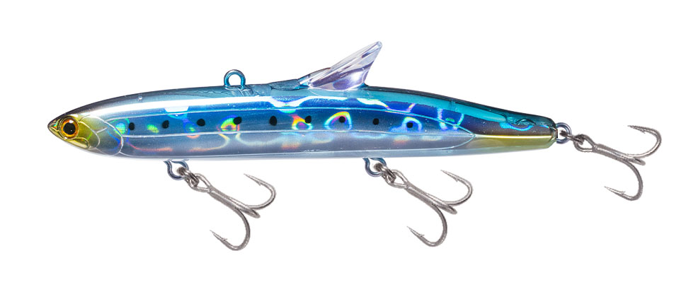
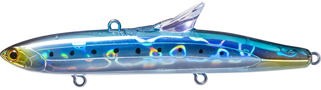
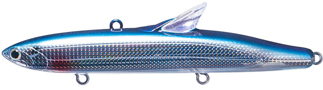
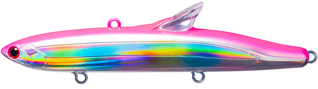
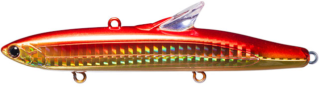

ベゼルロール
（BEZEL.ROLL）
ベゼルロール（BEZEL.ROLL）はTACKLEHOUSE（タックルハウス）のシンキングプラグです。
「コンタクト」シリーズのBEZEL（ベゼル）の1つで、背中にローリングベイト譲りのRBリップを備えたモデル。細身のボディで、リトリーブすると速度域を問わずハイピッチにローリングし、ただ巻きだけで幅広いレンジを攻略できます。主なターゲットは青物、サワラ、シーバスです。

画像出典:タックルハウス公式HP
スペック
- メーカー
- TACKLEHOUSE（タックルハウス）
- モデル
- CBR35
- タイプ
- シンキング
- 全長
- 120mm
- 自重
- 35g
- フック
- ST56 #6
- リング
- #4
- ウェイト
- 固定ウェイト
- ターゲット
- 青物・サワラ・シーバス
- 価格
- 2,300円（公式サイト表記）
- 発売
- 2024年
▼今すぐチェック
ベゼルロールの特徴
ただ巻きだけで、ディープから中層まで“艶かしく”ローリングさせられる120mm
-
RBリップで全速度域ハイピッチローリング
背中に備えたローリングベイト譲りのRBリップと細身のボディで、リトリーブすると速度域を問わず艶かしくローリングする。ただ巻きだけで結果に結びつけられるよう設定されている。
-
時折入る脱軌道スイムで反射喰いを誘う
ローリングの中に、時折左右への脱軌道スイムを織り交ぜるアクション設定。追尾してきた魚の反射喰いを狙える。
-
素早いフォールと高いレンジキープ力
35gの固定ウェイトで素早く沈み、高いレンジキープ能力でディープから中層まで幅広く探れる。こまめにレンジを刻んで、魚のいる層を確実に泳がせられる。
ベゼルロールの使い方
基本はただ巻き。着水後にカウントダウンで沈めるレンジを決め、ただ巻きでハイピッチローリングを出しながら引いてきます。
レンジキープ力が高いので、カウントを変えながらボトム付近から中層までこまめにレンジを刻むのが組み立ての基本。巻き速度を問わずローリングするので、青物狙いの速巻きでも、シーバス狙いのスロー〜ミディアムでも使えます。
ベゼルロールの得意な状況
足元まで水深のある堤防やボートゲーム、沖磯など、深さのある場所で青物・サワラ・シーバスを狙う状況がベストマッチ。
ディープから中層まで、魚のいるレンジを探しながら広く攻めたいときに強い1本です。
ワンポイント
製品出荷時のフロントフックは、通常とは逆向き（ヘッド方向に2本）にセットされています。製品テストの結果を踏まえたセッティングなので、フックを交換するときも同じ向きで付けるのがメーカーの推奨です。
メーカーの評価では、泳ぎの質は「静か〜ハイアピールの中間」、操作性は「オートマチック寄り」、レンジは「ディープ寄り」。巻くだけで仕事をしてくれるタイプです。
RBリップを持つタックルハウスのルアーの使い分け
| モデル | 全長／自重 | 得意な場面 |
|---|---|---|
| ベゼルロール（CBR35） | 120mm／35g | 深場の青物・サワラ・シーバス。ディープ〜中層をただ巻きで（本記事のモデル） |
| ローリングベイトシャッド（RBS80） | 80mm／24g | フォールとS字でアピールを足したいシーバス狙いに |
| ローリングベイト77 | 77mm／15g | 背面リップのオリジナル。ナチュラルに見せたいときに |
どれもローリングベイト譲りの背面リップを持つモデル。深さのある場所で大型の青物やサワラを狙うならベゼルロール、シーバス中心ならローリングベイトやローリングベイトシャッドと、狙う魚と水深で選び分けるとわかりやすくなります。
人気カラー
ベゼルロールは全9色展開。青物・サワラ・シーバス狙いでオススメのカラーを厳選して紹介します。

イワシイワシパターンに合わせた定番のナチュラルカラー。

カタクチイワシカタクチイワシを意識したベイトカラー。

ピンクレインボーピンク系のアピールカラー。

ゴールドレッドグローベリーゴールドとレッドにグローベリーを組み合わせた、ローライト向きのカラー。
画像出典:タックルハウス公式HP
ベゼルロールに似ているルアー
-
 ローリングベイトシャッド
タックルハウス
詳細はこちら＞
ローリングベイトシャッド
タックルハウス
詳細はこちら＞
全長80mm・自重24gの背面リップ付きシンキング。同じRBリップの泳ぎで、シーバス中心に一回り小さく攻めたいときに。
-
 ローリングベイト77
タックルハウス
詳細はこちら＞
ローリングベイト77
タックルハウス
詳細はこちら＞
全長77mm・自重15gの背面リップ付きシンキングペンシル。ベゼルロールのRBリップの元になったモデル。
-
 レアリス ジャークベイト SWリミテッド160S
DUO
詳細はこちら＞
レアリス ジャークベイト SWリミテッド160S
DUO
詳細はこちら＞
全長160mm・自重35gのシンキングミノー。同じ35gクラスで、サワラ・青物をジャーキングで狙いたいときの持ち替えに。